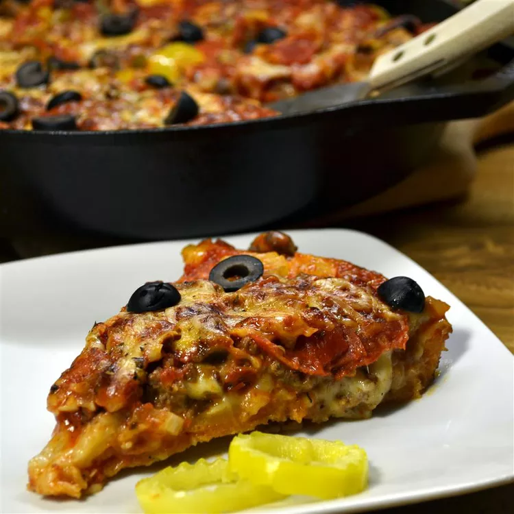

Chicago-Style Pan Pizza

Description
This deep-dish pizza is made in a 9x13-inch baking pan and loaded with sausage, mozzarella cheese, mushrooms, onion, homemade tomato sauce, and Parmesan cheese.
Some reviewers like to pre-bake the crust so it's cooked through before adding all the toppings.
Ingredients
- 1 loaf frozen bread dough, thawed
- 1 pound bulk Italian sausage
- 2 cups shredded mozzarella cheese
- 8 ounces sliced fresh mushrooms
- 1 small onion, chopped
- 2 teaspoons olive oil
- 1 can diced tomatoes, drained
- ¾ teaspoon dried oregano
- ½ teaspoon salt
- ¼ teaspoon fennel seed
- ¼ teaspoon garlic powder
- ½ cup freshly grated Parmesan cheese